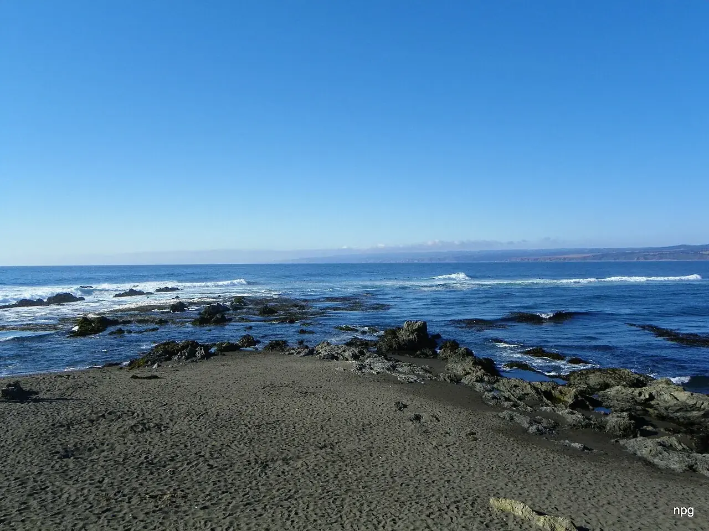

La Puntilla — Pichilemu
O’Higgins, Chili · surf

Un spot proche du centre de Pichilemu, face au parc Ross. Une porte d’entrée dans la culture surf de la ville.
- Lieu
- O’Higgins, Chili
- Niveau
- Variable selon les conditions
- Activités
- surf
- Type d'eau
- Mer / océan
- Coordonnées
- -34.39, -72.01 (position approximative du secteur)
Ouvrir dans Ocean Buddy Télécharger sur l'App Store
Source : Chile Travel.